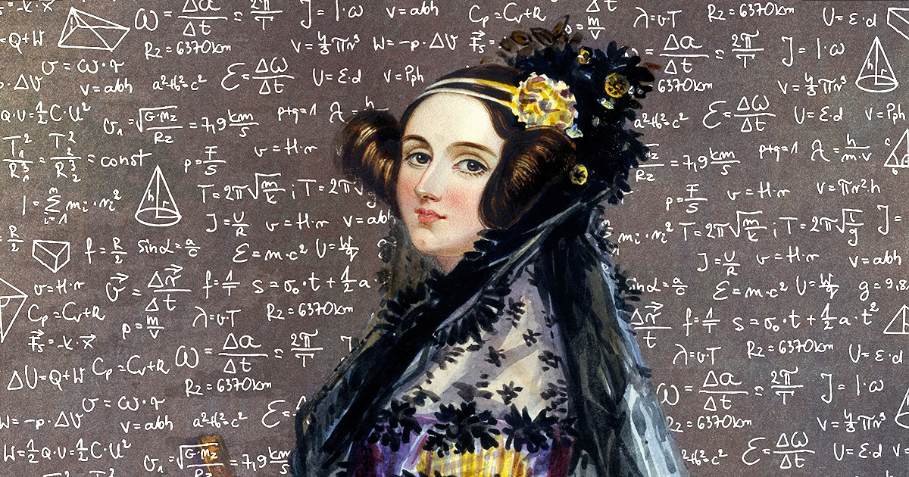
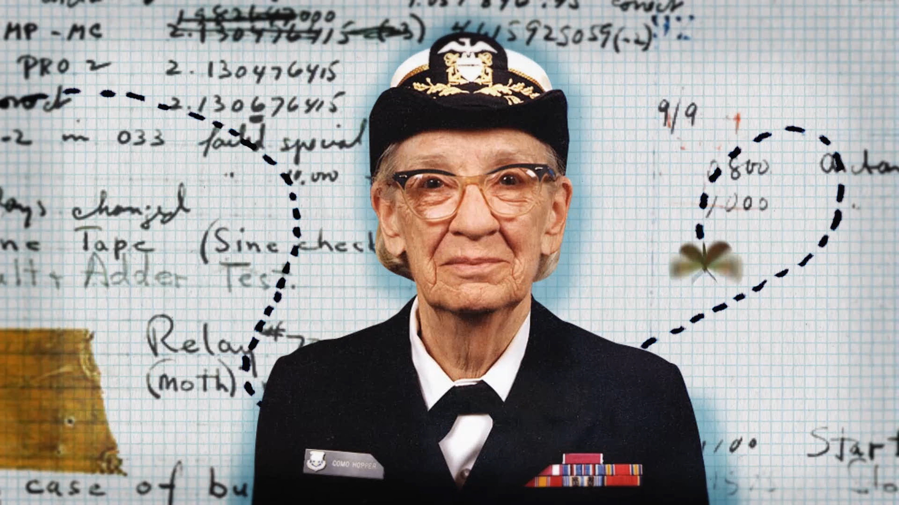
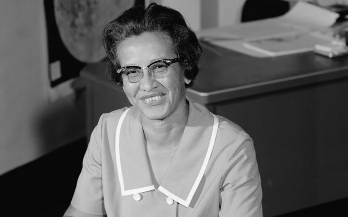
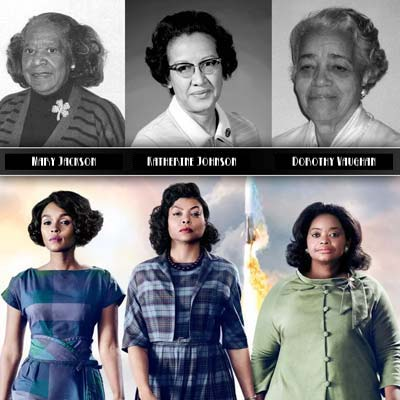
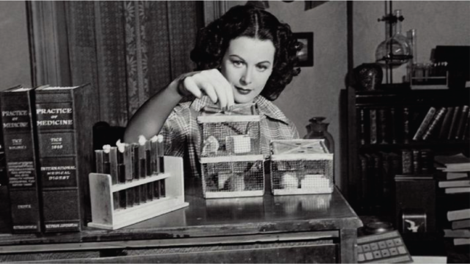

Augusta Ada Byron King, Condessa de Lovelace (nascida Byron, 10 de dezembro de 1815 — 27 de novembro de 1852), atualmente conhecida como Ada Lovelace, foi uma matemática e escritora inglesa. Hoje é reconhecida principalmente por ter escrito o primeiro algoritmo para ser processado por uma máquina, a máquina analítica de Charles Babbage. Durante o período em que esteve envolvida com o projeto de Babbage, ela desenvolveu os algoritmos que permitiriam à máquina computar os valores de funções matemáticas, além de publicar uma coleção de notas sobre a máquina analítica. Por esse trabalho é considerada a primeira programadora de toda a história.
Lovelace nasceu em 10 de dezembro de 1815 e é a única filha legítima do poeta Lord Byron e sua esposa Anne Isabella "Anabella" Byron, Lady Wentworth. Todos os outros filhos de Lorde Byron nasceram fora do casamento. Byron foi escritor de uma das versões de Don Juan. Se separou da esposa um mês depois do nascimento de Ada e deixou a Inglaterra para sempre, quatro meses depois. Acabou morrendo doente durante a Guerra da Independência Grega, quando Ada tinha oito anos de idade. A mãe de Ada promoveu o interesse de Ada em matemática e lógica, em um esforço para impedi-la de desenvolver o que ela via como a insanidade de Lord Byron. Mas Ada permaneceu interessada em seu pai e, a seu pedido, foi enterrada ao lado dele quando morreu.

Desenho de Ada Lovelace, por Alfred Edward Chalon, 1838.
Na juventude, seus talentos matemáticos levaram-na a uma relação de trabalho e de amizade com o colega matemático britânico Charles Babbage e, em particular, o trabalho de Babbage sobre a Máquina Analítica. Entre 1842 e 1843, ela traduziu um artigo do engenheiro militar italiano Luigi Federico Menabrea sobre a máquina e complementou com um conjunto de sua própria autoria, que ela chamou de Anotações. Essas notas contêm um algoritmo criado para ser processado por máquinas, o que muitos consideram ser o primeiro programa de computador. Ela também desenvolveu uma visão sobre a capacidade dos computadores de irem além do mero cálculo ou processamento de números, enquanto outros, incluindo o próprio Babbage, focavam apenas nessas capacidades. Sua mentalidade da "ciência poética" a levou a fazer perguntas sobre a máquina analítica (como mostrado em suas notas) e a examinar como os indivíduos e a sociedade se relacionam com a tecnologia como uma ferramenta de colaboração. Casou-se, aos 20 anos com William Lord King. Este foi nomeado Conde de Lovelace em 1838, e Ada tornou-se Lady Lovelace. Ada morreu de câncer de útero, aos 36 anos de idade.
Grace Hopper
Grace Murray Hopper (Nova Iorque, 9 de dezembro de 1906 — Condado de Arlington, 1 de janeiro de 1992) foi almirante e analista de sistemas da Marinha dos Estados Unidos nas décadas de 1940 e 1950, criadora da linguagem de programação de alto nível Flow-Matic (em desuso) — base para a criação do COBOL — e uma das primeiras programadoras do computador Harvard Mark I em 1944. Antes da Marinha, Hopper conquistou o Ph.D. em matemática na Universidade de Yale e foi professora de matemática na Faculdade Vassar. Tentou entrar na Marinha durante a Segunda Guerra Mundial, mas foi rejeitada por ter 34 anos. Por consequência, entrou na Navy Reserves (em tradução livre, a Reserva da Marinha). Em 1944, começou sua carreira em computação, quando trabalhou no Mark I de Harvard no time conduzido por Howard H. Aiken. Neste período, foi co-autora de três artigos científicos baseados nesse projeto. Em 1949, ela passou a participar do Eckert-Mauchly Computer Corporation e fez parte do time que desenvolveu o computador UNIVAC I. Enquanto estava no Eckert-Mauchly, começou o desenvolvimento do seu compilador. O programa dela convertia termos em Inglês para código de máquina e em 1952, tinha terminado o desenvolvimento do seu programa ligador (originalmente chamado de compilador), o qual foi desenvolvido para o Sistema A-0.

Foto de Grace Hopper fazendo alusão ao seu trabalho na marinha, a sua relação com a matemática/computação e ao termo "bug".
Não participou efetivamente na criação da linguagem COBOL, mas de um subcomitê originado de um dos três comitês (o de Curto Prazo) propostos em uma reunião no Pentágono em Maio de 1959, que desenvolveu as especificações da linguagem COBOL. Ele era formado por seis pessoas: William Selden e Gertrude Tierney da IBM; Howard Bromberg e Howard Discount da RCA; Vernon Reeves e Jean E. Sammet da Sylvania Electric Products. A concepção de Hopper de que havia a necessidade de se criar uma linguagem orientada para negócios comuns deu origem ao acrônimo COBOL (Common Business Oriented Language). Tudo foi feito sem definir os comandos para minimizar melindres entre os técnicos das empresas convocadas a participar da criação de um denominador comum entre todos os fabricantes existentes na época. Grace Hopper participou contribuindo com a abertura dos comandos FLOW-MATIC. É dito que é de autoria de Hopper o termo "bug" usado para designar uma falha num código-fonte. Quando procurava um problema em seu computador; percebeu que havia um inseto morto no computador causando transtorno, desde então o termo bug passou a ser usado.
Mas existem outras versões que contradizem a origem verdadeira do termo "bug". Uma das versões é de Thomas Edison que casualmente tem muita semelhança com a história da analista. Um inseto que causou problemas de leitura em seu fonógrafo em 1878. Em 1998 recebeu a honra de ter seu nome em um navio da Marinha. O contratorpedeiro USS Hopper entrou no serviço ativo em 1998. Além disso, o supercomputador da NERSC foi nomeado em sua homenagem, chamando Cray XE6 "Hopper". Durante a sua vida, ela recebeu 40 diplomas honorários de universidades ao redor do mundo. Uma faculdade na Universidade de Yale foi renomeada em sua homenagem. Em 1991 recebeu uma Medalha Nacional de Tecnologia e no dia 22 de Novembro de 2016 foi postumamente premiada com a Medalha Presidencial de Liberdade pelo Presidente Barack Obama.
Katherine Johnson
Katherine Coleman Goble Johnson (White Sulphur Springs, 26 de agosto de 1918 - Newport News, 24 de fevereiro de 2020) foi uma matemática, física e cientista espacial norte-americana. Ela fez contribuições fundamentais para a aeronáutica e exploração espacial dos Estados Unidos, em especial em aplicações da computação na NASA. Conhecida pela precisão na navegação astronômica informatizada, seu trabalho de liderança técnica na NASA se estendeu por décadas onde ela calculava as trajetórias, janelas de lançamento e caminhos de retorno de emergência para muitos voos de Projeto Mercury, incluindo as primeiras missões da NASA de John Glenn, Alan Shepard, o voo da Apollo 11, em 1969, à Lua e trabalho contínuo por meio do programa dos ônibus espaciais e sobre os planos iniciais para a missão a Marte. Em 2016, foi incluída na lista de 100 mulheres mais inspiradoras e influentes pela BBC.

Foto de Katherine Johnson.
A história de Katherine Johnson, Dorothy Vaughan e Mary Jackson simboliza a luta e a vitória. Juntas, elas romperam barreiras de raça e gênero como as brilhantes matemáticas conhecidas como "computadoras humanas" da NASA. Dorothy Vaughan foi a primeira supervisora negra na agência e uma especialista na linguagem de programação FORTRAN. Mary Jackson, por sua vez, superou obstáculos e tornou-se a primeira engenheira negra da NASA em 1958. Em 2021, a sede da NASA em Washington foi renomeada em sua homenagem, um tributo monumental ao seu legado. Suas histórias e a de outras colegas foram retratadas no famoso filme "Estrelas Além do Tempo".

Foto mostrando, respectivamente, Mary Jackson, Katherine Johnson e Dorothy Vaughan na vida real e as atrizes que interpretaram seus papéis no filme "Estrelas Além do Tempo".
Hedy Lamarr
Muitas vezes chamada de "A Mulher Mais Bonita do Cinema", a beleza e presença de Hedy Lamarr fizeram dela uma das atrizes mais populares de sua época. Ela nasceu Hedwig Eva Maria Kiesler em 9 de novembro de 1914, em Viena, Áustria. Aos 17 anos, Hedy estrelou seu primeiro filme, um projeto alemão chamado Geld auf der Straße. Hedy deu continuidade à sua carreira no cinema atuando em produções alemãs e tcheco-eslovacas. O filme alemão Ekstase (1932) a trouxe à atenção dos produtores de Hollywood, e ela logo assinou um contrato com a MGM. Já em Hollywood, ela mudou oficialmente seu nome para Hedy Lamarr e estrelou seu primeiro filme americano, Algiers (1938), ao lado de Charles Boyer. Ela continuou conseguindo papéis ao lado dos atores mais populares e talentosos da época, incluindo Spencer Tracy, Clark Gable e Jimmy Stewart. Alguns de seus filmes incluem uma adaptação de Tortilla Flat (1942) de John Steinbeck, White Cargo (1942), Samson and Delilah (1949) de Cecil B. DeMille, e The Female Animal (1957).

Foto de Hedy Lamarr.
Como se ser uma atriz linda e talentosa não bastasse, Hedy também era uma matemática, cientista e inovadora brilhante. Juntamente com o famoso compositor George Antheil, Lamarr patenteou o "Sistema de Comunicação Secreta" durante a Segunda Guerra Mundial. Sua ideia — agora conhecida como "salto de frequência" — consistia em uma maneira de transmissores de radiogoniometria e receptores de torpedos saltarem simultaneamente de uma frequência para outra. A invenção da estrela de Hollywood buscava impedir a interceptação, por parte do inimigo, de estratégias, sinais e mensagens militares confidenciais. Embora a tecnologia da época tenha inicialmente limitado a viabilidade do "salto de frequência", o advento do transistor e sua posterior miniaturização impulsionaram a ideia de Lamarr, tanto no setor militar quanto na indústria de telefonia celular. Em suma, a atriz de Hollywood introduziu a tecnologia que serviria de base para os modernos sistemas de comunicação Wi-Fi, GPS e Bluetooth. Sua criação do "salto de frequência", avaliada em cerca de US$ 30 bilhões, lhe rendeu o Prêmio Pioneiro da Electronic Frontier Foundation, bem como o Prêmio Bulbie Gnass de Espírito de Realização da Convenção de Invenções. A impressionante conquista tecnológica de Lamarr, combinada com seu talento como atriz e carisma, faz dela "A Mulher Mais Bonita do Cinema", uma das mulheres mais realizadas e inteligentes não apenas em Hollywood, mas também na área de STEM (Ciência, Tecnologia, Engenharia e Matemática).